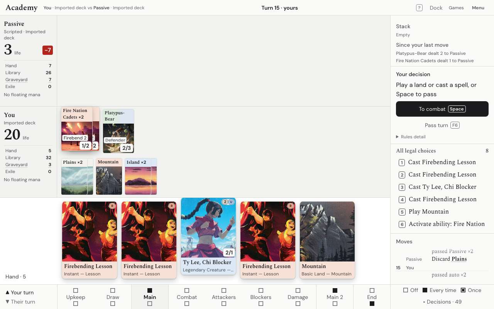
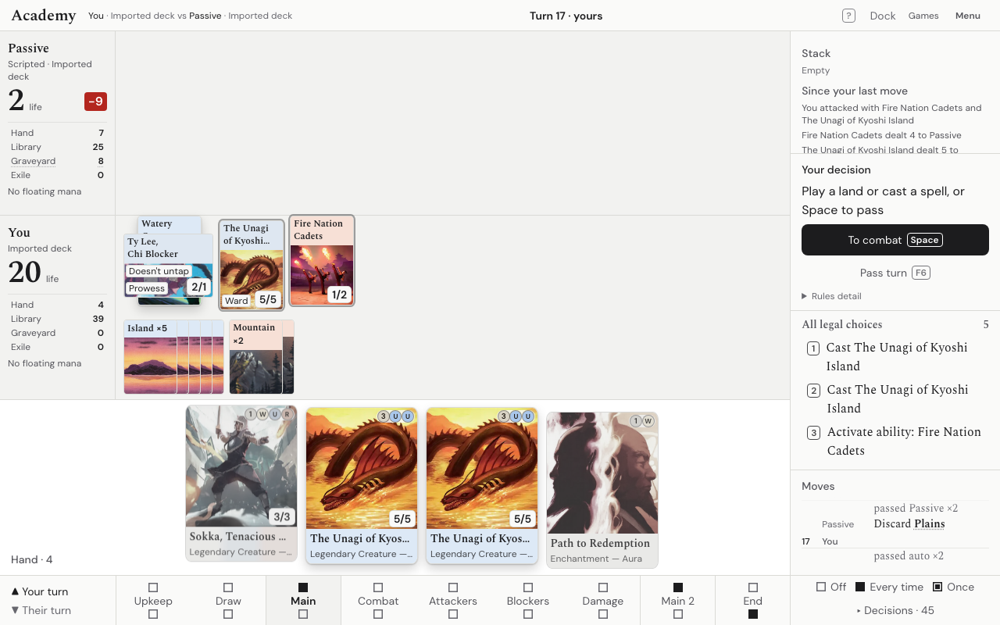
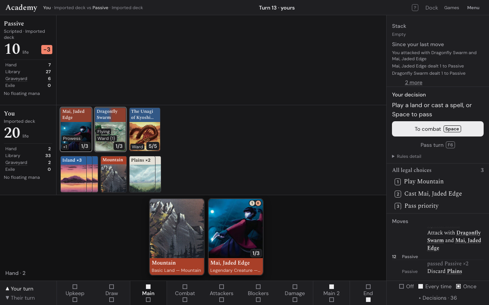

Rust had changed after the installed extension was built, so I rebuilt the release wheel and swapped in its cp313 .so.
I also built the static SPA. Then I launched four managym academy play servers with imported decks against the Passive opponent
(seeds 7, 11, 5 and 3). A Playwright script played each game to the end at 1280×800, two in light and two in dark. On every turn it recorded
each battlefield card's size, chips, chip titles and accessible name, and whether any chip clipped or overlapped the name, the P/T plate or the policy pill.
It hovered named cards to read Inspect, and afterwards it opened "Review this game". I also ran e2e/card-badges.spec.ts: 5 of 5 passed.
Firebend 2.
The accessible name and title show Firebending 2. On a turned 112-wide card the board shows the full Firebending 2.
Without a Lesson (the game 3 graveyard was empty), there is no chip. Works; before this pass the card showed bare +1.

Defender without a Lesson. With one, the chip is struck through (overridden)
and its title reads Defender · can attack anyway. It attacked. Works.Doesn't untap and Prowess as whole chips, never +2.
Watery Grasp later enchanted it, and the restriction title then named both sources: Doesn't untap · Watery Grasp · Ty Lee, Chi Blocker, while its source is controlled.
There is no Flash chip, and Inspect still lists Flash. Works.
Ward, never +1.
The accessible name keeps Ward—Waterbend {4}. On the roomier end-of-game board the full label appeared. Works.Menace chip. Inspect reads Menace · Sokka, Tenacious Tactician and
Prowess · Sokka, Tenacious Tactician, never "Another ability". Its own printed Prowess stays plain. Works; this was still wrong in the previous QA.No combat (the compact label on a 115 px card that also carries Doesn't untap).
The title and accessible name read Can't attack or block · Path to Redemption. Works.No combat, and Inspect reads Can't attack or block with no "Static ability" noise.
Once Ty Lee had 4 power, the chip went away and Tiger-Dillo attacked. Works.Double strike + Prowess, and after first-strike damage Struck first.
On an 82 px card it shows Prowess + +1, and the +1 title reads Double strike · 1 double strike counter. See "Still wrong".

Doesn't untap, Unagi's Ward, Mai's Double strike, the spirals). Works.scrollWidth > clientWidth in any per-turn dump. My bounding-box check flagged five chips at game end. All five were on
attacking cards, which are rotated, so their axis-aligned boxes overlap the P/T plate. The screenshot shows Cadets' Firebending 2 sitting clear of 5/2.
These are false positives. There were no page errors.Every case in the plan's "Done when" behaves correctly in real live Play and Replay games, in light and dark: Platypus-Bear, Fire Nation Cadets (Firebend 2),
turned Ty Lee, Unagi (Ward), Sokka-granted abilities named in Inspect, and Aura-locked creatures naming the Aura. Nothing needed fixing in this pass.
Double strike hides behind +1 on 82 px cards. At 12 px the label needs about 88 px, the inner width is 76 px, and no whole-word short form exists.
The fitter shows the shorter Prowess and counts Double strike in +1, whose tooltip and the accessible name carry it. This follows the spec, but double strike
arguably matters more than Prowess at a glance. Fixing it is a design choice (an abbreviation, or a wider card), so I left it.Ty Lee, Chi Blocker, while its source is controlled. This is accurate but stilted duration wording. The previous QA accepted it, and I left it unchanged.